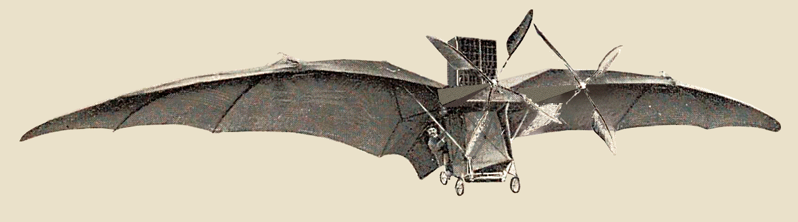
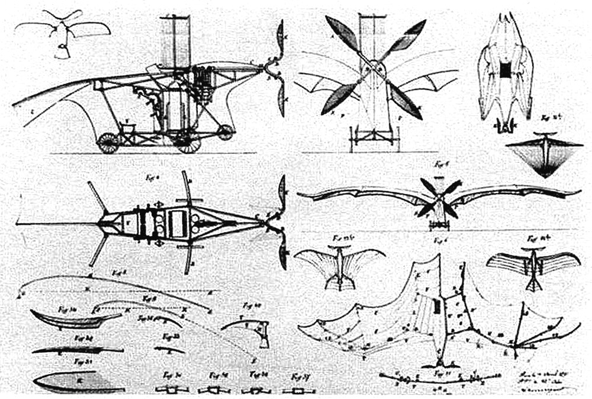
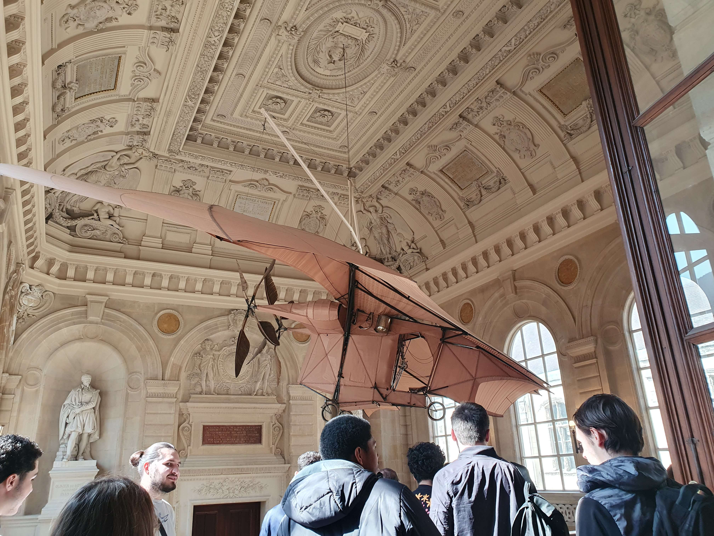

L'Avion n°3 de Clément Ader
Pièce emblématique du musée des Arts et Métiers, l'Avion n° 3 de Clément Ader témoigne des débuts héroïques de l'aviation, quand inventeurs et ingénieurs rivalisaient d'audace pour réaliser le rêve ancestral du vol.
À la fin du XIXe siècle, deux camps s'opposent : les partisans de l'aérostation (objets plus légers que l'air) et ceux, comme Ader, convaincus qu'on peut faire voler des machines plus lourdes que l'air.
Passionné par le vol animal depuis l'enfance, cet ingénieur aux multiples talents (chemins de fer, vélocipédie, téléphonie) construit d'abord l'Éole en 1890. Son succès - premier décollage d'un engin plus lourd que l'air grâce au principe de portance - lui vaut le soutien du ministère de la Guerre.
Ader expose son avion à l'Exposition universelle de 1900 à Paris, où il inspire de jeunes inventeurs tel Gabriel Voisin. En 1902 l'avion est transféré au musée des Arts et Métiers du Conservatoire national des arts et métiers de Paris, où il est exposé depuis. Il subit une importante restauration dans les années 1980. L"Avion III a été exposé également au 1er Salon de l’aéronautique, en décembre 1908, au Grand Palais des Champs-Élysées.
